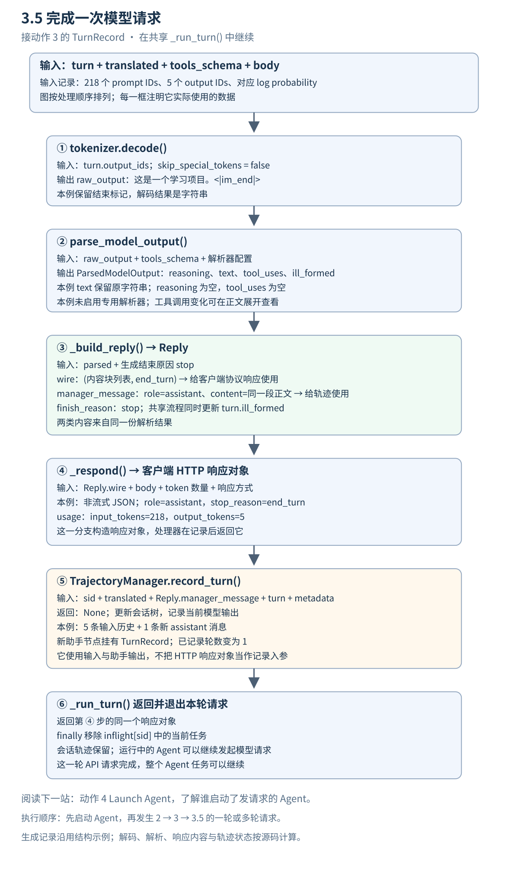

3.5 完成一次模型请求 纵向数据流

返回原架构图 · 上一站 动作 3 · 下一站 Launch Agent · 打开图文预览
动作 3 交回 TurnRecord；本篇接着把输出 token 解码、解析并封装为客户端响应，再保存本轮轨迹，让 _run_turn() 完成这一次请求。 3.5 是补充阅读编号，用来连接生成与返回路径；原架构图仍保留原来的 8 条箭头。
沿用动作 3 的同一份示例：218 个输入 token，5 个输出 token。生成记录和 log probability 仍是上一站的结构演示数据；本篇的解码、解析、Reply 构造和轨迹记录由本地真实源码计算。示例采用 Anthropic 协议、非流式响应，专用工具与推理解析器配置均为 None，可选调试回调未启用。
主路径有两个去向：客户端拿到协议响应，轨迹管理器保存输入与模型输出。 Reply 会同时准备这两类数据，后续函数分别使用它们。完整示例保留每一步的快照。
1 接住动作 3 的生成记录
输入： 共享 _run_turn() 中的 turn，以及仍然持有的 translated、tools_schema 和原始 body。
生成记录的输出部分如下。prompt_ids 仍是上一站完整的 218 项列表，放在完整示例中。
{
"output_ids": [
105464,
100134,
73345,
1773,
151645
],
"finish_reason": "stop",
"output_log_probs": [
-0.12,
-0.08,
-0.06,
-0.03,
-0.01
],
"ill_formed": false
}
| 数据 | 这里的去向 |
|---|---|
turn.output_ids |
解码为 raw_output |
tools_schema 与解析器配置 |
帮助识别正文中的工具调用与推理内容 |
turn.finish_reason |
帮助构造协议结束原因 |
translated、本轮助手消息与更新后的 turn |
交给轨迹管理器 |
原始 body |
用于响应方式及协议字段；本例选择非流式响应 |
展开从动作 3 接收到的完整 TurnRecord
{
"prompt_ids": [
151644,
8948,
198,
105043,
46100,
110498,
3407,
2,
13852,
271,
2610,
1231,
1618,
825,
476,
803,
5746,
311,
7789,
448,
279,
1196,
3239,
382,
2610,
525,
3897,
448,
729,
32628,
2878,
366,
15918,
1472,
15918,
29,
11874,
9492,
510,
27,
15918,
397,
4913,
1313,
788,
330,
1688,
497,
330,
1688,
788,
5212,
606,
788,
330,
878,
2458,
497,
330,
4684,
788,
330,
57553,
18158,
26898,
497,
330,
13786,
788,
5212,
1313,
788,
330,
1700,
497,
330,
13193,
788,
5212,
2343,
788,
5212,
1313,
788,
330,
917,
9207,
2137,
330,
6279,
788,
4383,
2343,
1341,
3417,
532,
522,
15918,
1339,
2461,
1817,
729,
1618,
11,
470,
264,
2951,
1633,
448,
729,
829,
323,
5977,
2878,
220,
151657,
151658,
11874,
9492,
510,
151657,
198,
4913,
606,
788,
366,
1688,
11494,
8066,
330,
16370,
788,
366,
2116,
56080,
40432,
31296,
151658,
151645,
198,
151644,
872,
198,
57553,
18158,
61945,
21324,
74577,
114,
109193,
43815,
1773,
151645,
198,
151644,
77091,
198,
35946,
60726,
57553,
18158,
26898,
8997,
151657,
198,
4913,
606,
788,
330,
878,
2458,
497,
330,
16370,
788,
5212,
2343,
788,
330,
54675,
21324,
95642,
151658,
151645,
198,
151644,
872,
198,
27,
14172,
9655,
397,
2,
28523,
198,
105464,
100134,
73345,
8997,
522,
14172,
9655,
29,
151645,
198,
151644,
872,
198,
14880,
11622,
105321,
109193,
1773,
151645,
198,
151644,
77091,
198
],
"output_ids": [
105464,
100134,
73345,
1773,
151645
],
"finish_reason": "stop",
"output_log_probs": [
-0.12,
-0.08,
-0.06,
-0.03,
-0.01
],
"ill_formed": false
}
2 解码 输出 token 变成 raw_output
共享流程调用 tokenizer.decode()，参数为 skip_special_tokens=False。
输入：
[
105464,
100134,
73345,
1773,
151645
]
输出： 一个字符串 raw_output：
"这是一个学习项目。<|im_end|>"
这一步恢复 token 对应的文本，还没有分离正文和工具调用。本例的最后一个 ID 151645 对应 <|im_end|>；因为保留特殊 token，它会出现在解码结果中。
3 parse_model_output 分离输出的不同部分
输入： 上面的 raw_output、上一站的 tools_schema，以及解析器配置。本例配置如下：
{
"tool_parser_name": null,
"reasoning_parser_name": null
}
输出： ParsedModelOutput 对象，下面用 JSON 展示字段：
{
"reasoning": "",
"text": "这是一个学习项目。<|im_end|>",
"tool_uses": [],
"ill_formed": false
}
| 字段 | 本例结果 | 含义 |
|---|---|---|
reasoning |
空字符串 | 本例没有解析出推理内容 |
text |
解码后的这段文本 | 给后续响应构造使用的正文 |
tool_uses |
空列表 | 本轮没有解析出工具调用 |
ill_formed |
false |
本例没有标记工具参数格式异常 |
本例未启用专用解析器，文本中也没有回退解析器能识别的工具调用。因此 text 保留了 <|im_end|>。解码与解析承担不同职责，调用解析函数并不保证所有模型标记都会被移除。 这里保留源码的实际输出，不手工删改示例。
再看一个小对照 有工具调用时 ParsedModelOutput 怎样变化
下面是另一个构造的输出文本，仅用于观察同一函数如何分离工具调用。它使用本实现的 XML 回退格式，仍然提供同一个 read_file 工具定义。
输入 raw_output：
"我先读取文件。<tool_call><function=read_file><parameter=path>README.md</parameter></function></tool_call>"
真实函数输出：
{
"reasoning": "",
"text": "我先读取文件。",
"tool_uses": [
{
"name": "read_file",
"input": {
"path": "README.md"
}
}
],
"ill_formed": false
}
正文与调用已经分开：text 只剩“我先读取文件。”，调用信息进入 tool_uses。这里仅识别和描述调用，实际执行工具的是客户端 Agent。
专用 SGLang 推理与工具解析器的配置、格式分支及异常处理，可以在理解这一契约后继续展开。
4 _build_reply 同时准备协议内容与轨迹消息
输入： parsed、生成结束原因 stop，以及共享流程传入的消息和工具定义。这个 Anthropic 构造函数根据解析结果和结束原因组织回复内容。
输出： 一个 Reply 对象。字段如下；其中 wire 在 Python 中是 (blocks, stop_reason) 二元组，用 JSON 展示时成为数组。
{
"manager_message": {
"role": "assistant",
"content": "这是一个学习项目。<|im_end|>"
},
"finish_reason": "stop",
"wire": [
[
{
"type": "text",
"text": "这是一个学习项目。<|im_end|>"
}
],
"end_turn"
]
}
| Reply 字段 | 谁使用 | 本例表达什么 |
|---|---|---|
wire 的第 1 项 blocks |
_respond() |
Anthropic 内容块列表 |
wire 的第 2 项 stop_reason |
_respond() |
end_turn，用于客户端协议 |
manager_message |
record_turn() |
统一的 role: assistant 消息 |
finish_reason |
Reply 中的内部结束标记 | 本例为 stop；这个版本的后续记录仍使用 turn.finish_reason |
客户端的内容块和内部助手消息描述同一段内容，但结构不同；协议结束原因 end_turn 和生成结束类型 stop 也分别用于不同位置。此版本的 _run_turn() 后续使用 reply.wire 和 reply.manager_message，没有读取 reply.finish_reason；轨迹记录中的结束原因来自 turn。
共享流程接着用 parsed.ill_formed 更新本轮 TurnRecord。本例为 false，所以记录字段与动作 3 相同；格式异常时这一步可以改变记录中的标记。
补充工具调用例子的 Reply 对照
前面解析出的 read_file 调用会成为协议的 tool_use 内容块，并成为内部助手消息的 tool_calls。
{
"manager_message": {
"role": "assistant",
"content": "我先读取文件。",
"tool_calls": [
{
"type": "function",
"function": {
"name": "read_file",
"arguments": {
"path": "README.md"
}
}
}
]
},
"finish_reason": "tool_calls",
"wire": [
[
{
"type": "text",
"text": "我先读取文件。"
},
{
"type": "tool_use",
"id": "toolu_aaaaaaaaaaaaaaaa",
"name": "read_file",
"input": {
"path": "README.md"
}
}
],
"tool_use"
]
}
示例中的工具调用 ID 已固定，便于逐项对照；真实运行会生成新的 ID。ID 保留在客户端协议块中，内部规范化的 tool_calls 只保留名称和参数。协议的 stop_reason 变成 tool_use，内部 finish_reason 变成 tool_calls。
5 _respond 构造客户端 HTTP 响应
输入： Reply.wire、原始 body、输入和输出 token 数量，以及响应方式。
本例 body.stream 没有设为 true，请求头也没有要求事件流，因此走非流式分支：先 _render_response() 构造协议字典，再用 web.json_response() 构造响应对象。
输出： HTTP 响应对象，协议 body 的完整内容是：
{
"id": "msg_aaaaaaaaaaaaaaaaaaaaaaaa",
"type": "message",
"role": "assistant",
"model": "slime-actor",
"content": [
{
"type": "text",
"text": "这是一个学习项目。<|im_end|>"
}
],
"stop_reason": "end_turn",
"stop_sequence": null,
"usage": {
"input_tokens": 218,
"output_tokens": 5
}
}
本例的状态为 200，内容类型为 application/json。usage 中的 218 和 5 来自本轮输入、输出 ID 列表的长度。请求没有指定 model 字段，所以响应采用源码默认值 slime-actor；实际服务的模型配置和上一站使用的 tokenizer 是另一层信息。
响应 ID 为便于对照而固定。协议 body 由真实构造函数计算，示例用本地对象承载 HTTP 响应，没有启动网络服务。
此时 _respond() 已返回响应对象，主路径接着记录轨迹。 对于本例的非流式分支，最终由 HTTP 处理器返回这个对象；流式分支会在 _respond() 内写出事件。读主路径时先保持这两种情况的区别，事件格式可以以后展开。
6 record_turn 保存本轮输入与模型输出
输入：
| 参数 | 本例数据 |
|---|---|
sid |
demo-session |
prompt_messages |
动作 2 的完整 5 条 translated 消息 |
response_message |
上面 Reply.manager_message |
turn |
包含输入 ID、输出 ID、log probability 和格式标记的本轮记录 |
metadata |
{"sid": "demo-session"} |
本例从一个尚未记录任何交互的会话树开始；请求自带的历史消息也会接入树中。
函数返回值： Python None。变化发生在 TrajectoryManager 的会话状态里。
记录前的状态：
{
"has_session": false,
"turn_count": 0,
"paths": []
}
记录后的状态摘要如下。这是为了阅读而提取的观察视图，不是 record_turn() 的返回值：
{
"has_session": true,
"turn_count": 1,
"path_roles": [
"system",
"user",
"assistant",
"tool",
"user",
"assistant"
],
"last_message": {
"role": "assistant",
"content": "这是一个学习项目。<|im_end|>"
},
"last_node_has_turn": true
}
本例形成一条消息路径，其中前 5 条来自输入，第 6 条是本轮输出：
| 路径位置 | 角色 | 来源 | 是否挂有生成记录 |
|---|---|---|---|
| 1 | system |
请求带来的历史消息 | 无 |
| 2 | user |
请求带来的历史消息 | 无 |
| 3 | assistant |
请求带来的历史消息 | 无 |
| 4 | tool |
请求带来的历史消息 | 无 |
| 5 | user |
请求带来的历史消息 | 无 |
| 6 | assistant |
本轮模型输出 | 本轮 TurnRecord |
历史里已经有一条 assistant 消息，但它来自客户端带回的历史。本次记录只给新的助手节点挂上当前 TurnRecord，因此会话的已记录轮数为 1。
展开记录后的完整路径快照
{
"has_session": true,
"turn_count": 1,
"paths": [
[
{
"role": "system",
"message": {
"role": "system",
"content": "你是代码助手。"
},
"has_generation_record": false,
"turn_index": null
},
{
"role": "user",
"message": {
"role": "user",
"content": "读取 README.md 并概括内容。"
},
"has_generation_record": false,
"turn_index": null
},
{
"role": "assistant",
"message": {
"role": "assistant",
"content": "我先读取文件。",
"tool_calls": [
{
"type": "function",
"function": {
"name": "read_file",
"arguments": {
"path": "README.md"
}
}
}
]
},
"has_generation_record": false,
"turn_index": null
},
{
"role": "tool",
"message": {
"role": "tool",
"content": "# Demo\n这是一个学习项目。"
},
"has_generation_record": false,
"turn_index": null
},
{
"role": "user",
"message": {
"role": "user",
"content": "请用一句话概括。"
},
"has_generation_record": false,
"turn_index": null
},
{
"role": "assistant",
"message": {
"role": "assistant",
"content": "这是一个学习项目。<|im_end|>"
},
"has_generation_record": true,
"turn_index": 1
}
]
]
}
完整记录入参和更新后的 TurnRecord 见示例.json中的 record_input。消息节点匹配、分叉和重写合并的内部算法，留到轨迹管理专题继续展开。
这一阶段保存会话轨迹。会话结束后再导出训练样本，是另一阶段，见 Slime Core 完整请求流程的会话结束部分。
7 _run_turn 返回响应并结束这一次请求
轨迹记录完成后，共享处理器返回第 5 节构造的同一个响应对象；退出时从 inflight[sid] 中移除当前任务。
本例退出后的观察结果：
{
"returned_same_response_object": true,
"inflight_session_key_exists": true,
"inflight_task_count": 0,
"session_trajectory_retained": true
}
inflight 仍有这个会话的空任务集合，但当前请求已经不在其中。会话轨迹继续保留，Agent 可以发起下一次请求。本轮请求完成不等于整个 Agent 任务结束。
接回 Launch Agent 的阅读位置
接下来可以读 动作 4 Launch Agent，看谁启动了会持续请求模型的 Agent。2 → 3 → 3.5 → 4 是学习顺序；实际执行时先启动 Agent，再发生一轮或多轮请求：
Launch Agent
-> Agent makes an API request
-> Translate & Forward
-> Generate Tokens
-> Decode / Parse / Respond / Record
-> Agent continues
_run_turn() 处理的是上述一次 API 请求。Harness 启动、沙箱管理以及 CLI 的运行属于外层 Agent 生命周期。
末尾校验 源码定义 调用顺序与示例来源
源码版本：8c17b676cb57af1d17ee4402e91e9209af84b60b。路径相对于 Slime 仓库根目录。
| 步骤 | 定义位置 | 调用或关键位置 |
|---|---|---|
| 本轮共享处理器 | slime/agent/adapters/common.py:318 |
下列步骤均在这个函数内 |
| 解码输出 | tokenizer 提供 | common.py:346，skip_special_tokens=False |
| 主解析器 | slime/agent/parsing.py:25 |
common.py:347–352 |
| 工具调用解析 | parsing.py:59 |
parsing.py:50 |
| XML 回退解析 | parsing.py:93 |
parsing.py:88 |
| 构造 Reply | slime/agent/adapters/anthropic.py:63 |
common.py:353 |
| 构造协议块与内部助手消息 | anthropic.py:147 |
anthropic.py:64 |
| 更新格式标记 | 共享处理器内部 | common.py:354 |
| 选择响应方式 | 共享处理器内部 | common.py:357 |
| 返回非流式响应对象 | anthropic.py:71 |
common.py:363；构造协议 body 的函数位于 anthropic.py:198 |
| 可选调试回调 | common.py:308 |
common.py:376；本例未启用 |
| 记录会话轨迹 | slime/agent/trajectory.py:283 |
common.py:384–390 |
| 返回响应、移除本轮任务 | 共享处理器内部 | common.py:391、:393 |
| 外层启动 Harness | examples/coding_agent_rl/generate.py:182 |
:205 调用 HARNESS_CLS().run() |
关键交接语句：
raw_output = tok.decode(turn.output_ids, skip_special_tokens=False) if turn.output_ids else ""
parsed = parse_model_output(raw_output, tools_schema=tools_schema,
tool_parser_name=self.tool_parser,
reasoning_parser_name=self.reasoning_parser)
reply = self._build_reply(parsed, turn.finish_reason, translated, tools_schema)
turn = dataclasses.replace(turn, ill_formed=parsed.ill_formed)
response = await self._respond(request, body, reply, in_tok, out_tok, stream)
self.manager.record_turn(sid, turn=turn, prompt_messages=translated,
response_message=reply.manager_message, metadata={"sid": sid})
return response
本例用上一站缓存的 Qwen2.5 tokenizer 实际解码。执行真实 _run_turn() 时，用动作 3 的记录代替网络生成返回；本地响应对象替代 aiohttp 的响应工厂。主解析函数、Anthropic Reply 和协议 body 构造、轨迹管理方法均按原始源码执行。完整调用顺序、配置、状态和补充工具样例见示例.json。
本篇保持正常成功请求的主路径。客户端断连、取消请求、流式事件以及专用解析器的具体分支，放在需要时深入阅读。